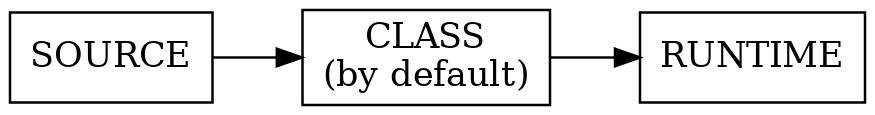
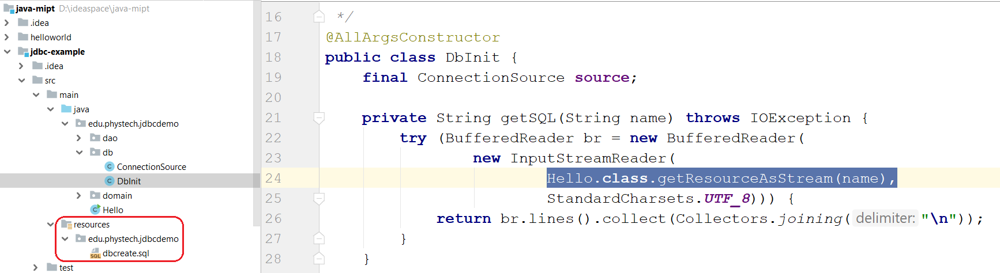
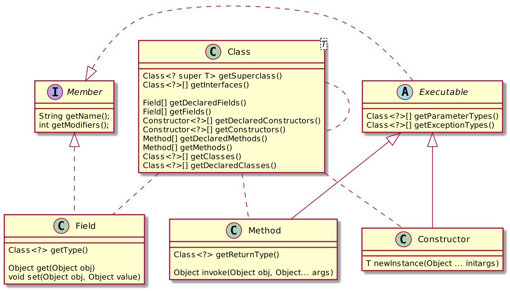
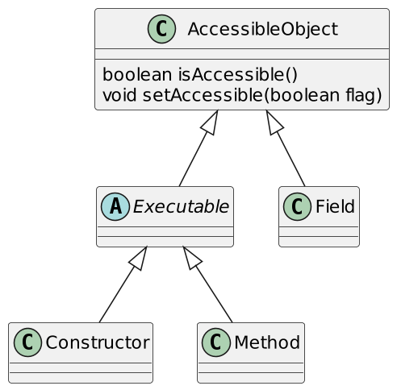
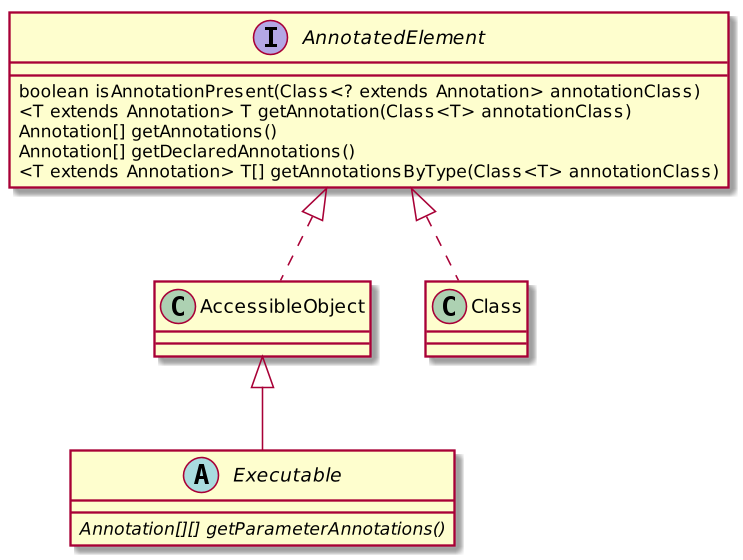
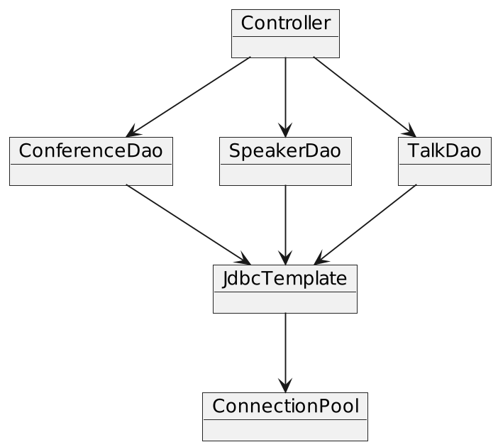
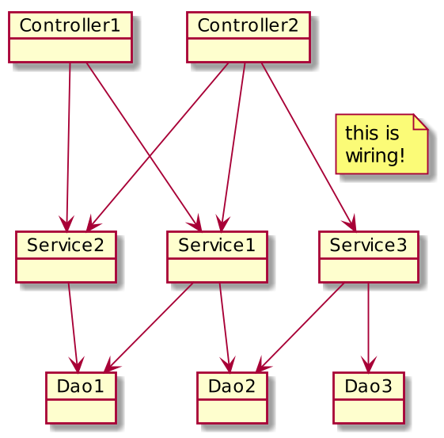
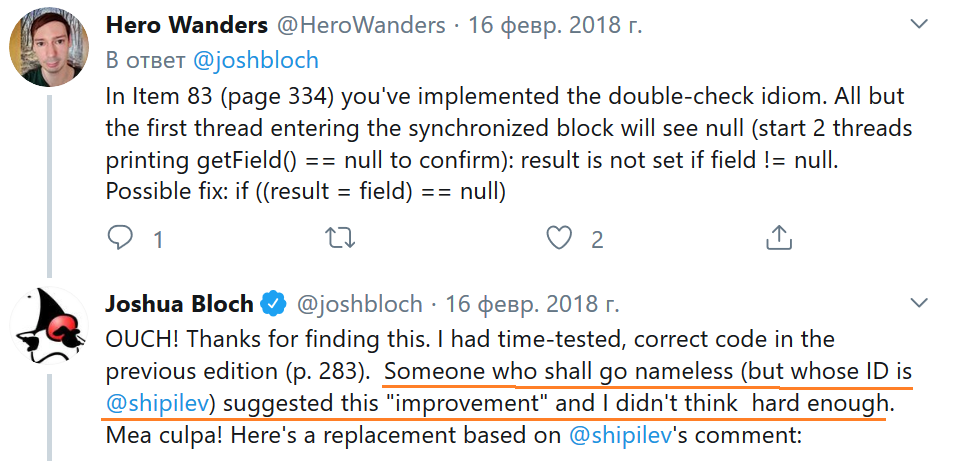

//Массивы задаются в фигурных скобках
@BugReport(..., reportedBy = {"Harry", "Carl"})
//То же самое, что {"Harry"}
@BugReport(..., reportedBy = "Harry")
//Конструирование вложенных аннотаций
@BugReport(..., ref = @Reference(id = "12345"))
//...Как видим, используя разрешённые типы,
//можно задать сколь угодно сложную структуру данныхCore Java. Лекция 12
Annotations (окончание). Reflection API. Архитектура приложения. Singleton (anti)pattern
@inponomarev
Иван Пономарёв, КУРС/МФТИ
Массивы и другие аннотации
Значение аннотации не может быть установлено в null. Не допускатся null даже в default-значениях. |
Где можно использовать аннотации
В декларациях
При использовании типов
Использование аннотаций в декларациях
Packages
Classes (включая
enum)Interfaces (включая annotation interfaces)
Methods
Constructors
Instance fields (включая константы
enum)Local variables' declarations
Parameter variables' declarations
Type parameters
Примеры использования аннотаций в декларациях
@Entity
public class User {
@Caption("user")
public User getUser(@Param("id") String userId) {
@SuppressWarnings("unchecked")
List<User> users = ....
}
}
class Cache<@Immutable V> {
...
}Аннотирование пакетов — в package-info.java
//package-info.java
@GPL(version="3")
package edu.phystech.corejava;
import org.gnu.GPL;Аннотирование использования типов
//аннотированный параметр, утверждает, что userId -- не `null`
User getUser(@NonNull String userId) { ... }
//Аннотированные использования типа: каждая строчка не `null`
List<@NonNull String> list = ...
Comparator.<@NonNull String>reverseOrder()
class Warning extends @Localized Message { ... }
List<@Localized ? extends Message> = ...
(@Localized String) text
if (text instanceof @Localized String) ...
//и т. д., список примеров не полный.
// Аннотации могут быть почти везде!Java8+: аннотирование использования типа в this
public class Foo {
//аннотируется использование типа!
void baz(@ReadOnly Foo this){
...
}
class Bar {
//аннотируется использование типа!
public Bar(@ReadOnly Foo Foo.this) {
...
}
}
}Знакомые стандартные (встроенные в язык) аннотации
Annotation | Применимость | Назначение |
| Методы | Метод переопределяет метод в базовом классе. Ошибка компиляции, если это не так (см. лекцию про классы). |
| Интерфейсы | Помечает интерфейс как функциональный (имеющий единственный абстрактный метод). Ошибка компиляции, если это не так (см. лекцию про lambdas & method refs). |
| Методы и конструкторы | Декларирует безопасное использование параметризованного varargs (см. лекцию про Generics) |
Стандартные (встроенные в язык) аннотации
Annotation | Применимость | Назначение |
| Все элементы API | Данный элемент API deprecated — т. е. сохранён для обратной совместимости, запрещён к использованию в новых проектах, и возможно будет удалён в будущем. |
| Все, кроме пакетов и аннотаций | Подавляет предупреждения заданного типа от компилятора и линтеров. |
| Все элементы API | Помечает код, как автоматически сгенерированный (как следствие, этот код не следует модифицировать руками). |
Аннотации управляются аннотациями
//Какие элементы кода могут быть аннотированы
@Target({ElementType.TYPE, ElementType.METHOD})
//На каком уровне сохраняются эти аннотации
@Retention(RetentionPolicy.Source)
public @interface BugReport {
...
}Target
ElementType | Применимость аннотаций |
| Интерфейсы аннотаций |
| Пакеты |
| Классы (в т. ч. |
| Методы |
| Конструкторы |
| Поля |
| Параметры методов или конструкторов |
| Определения локальных переменных |
| Типовые параметры |
| Использования типов |
RetentionPolicy

Retention Policy | Доступность аннотаций | API |
| На уровне исходников для annotation processors. Не попадают в class-файлы и runtime. | Language Model API |
| На уровне исходников и class-файлов. Невидимы в runtime. | Instrumentation API |
| На уровне исходников, в class-файлах и во время исполнения. | Reflection API |
Другие мета-аннотации
| Все аннотации данного типа будут попадать в JavaDoc-документацию. |
| Если класс помечен аннотацией данного типа, то все наследники данного класса также будут помечены аннотацией этого же типа. |
| Позволяет задать возможность многократной пометки элемента аннотацией одного и того же типа. |
Рефлексия (Reflection API)
Employee e = ... //присваиваем Employee
Employee m = ... //присваиваем Manager
//Получаем информацию в Runtime
Class<? extends Employee> ce = e.getClass();
Class<? extends Employee> cm = m.getClass();
System.out.printf("%s, %s%n", ce.getName(), cm.getName());
//edu.phystech.hello.Employee, edu.phystech.hello.Manager
System.out.printf("%s, %s%n", ce.getSimpleName(), cm.getSimpleName());
//Employee, ManagerКласс Class<T> параметризован
Документация: "The actual result type of getClass() is Class<? extends |X|> where |X| is the erasure of the static type of the expression on which getClass is called."
Employee e = ...;
//No cast needed!
Class<? extends Employee> c = e.getClass();
//No cast needed!
Employee newEmployee =
ce.getDeclaredConstructor().newInstance();
//Compile-time error!
Class<? extends Number> cn = e.getClass();Class literals
Литералы — строки в коде, порождающие объекты или значения. Например,
"foo"— литерал, порождающий объектStringс содержимым "foo".Литералы классов — специальные выражения в языке, порождающие объекты с типом
Class<…>.
Class literals — примеры
//тут всё понятно
Class<String> c1 = String.class;
Class<Integer> c2 = Integer.class;
//Да, так можно!!
Class<Integer> c3 = int.class;
//А ещё double.class, boolean.class и т. д.
//При этом c2 и с3 -- существенно РАЗНЫЕ объекты
//(например, c3.getConstructors() возвращает пустой массив).
//Тут ничего неожиданного нет, массивами можно параметризовать:
Class<int[]> c4 = int[].class;NB: странные имена классов-массивов
При чтении логов ошибок можно встретиться с таким:
Type |
|
| [B |
| [S |
| [I |
| [J |
| [C |
| [D |
| [F |
| [Z |
| [Ljava.lang.Integer; |
Динамический способ получения мета-класса
//может быть выброшен ClassNotFoundException
//параметр типа тут никак не может быть известен
Class<?> clazz =
Class.forName("edu.phystech.hello.Manager");
//Есть две формы:
//загрузчик вызвавшего метода, статическая инициализация
static Class<?> forName(String className)
throws ClassNotFoundException
//кастомный загрузчик, статическая инициализация по запросу
static Class<?> forName(String name, boolean initialize,
ClassLoader loader)Загрузка ресурсных файлов
public InputStream getResourceAsStream(String name)
public java.net.URL getResource(String name)
Анализ возможностей класса и взаимодействие с элементами класса

Получение членов класса
getXXX— все публичные элементы (поля, конструкторы, методы)getDeclaredXXX— все элементы, задекларированные в данном классе (без унаследованных)
Доступ к элементам

По умолчанию доступ определяется уровнями видимости (например, приватные элементы недоступны)
Можно открыть через
setAccessible(true)
Анализ аннотаций в runtime

Рефлексия и Generics
В runtime по объекту нельзя определить параметры типов (например, отличить
List<Employee>отList<Integer>).Анализируя параметризованнные классы (например,
List<T>) или методы (например,<T extends Comparable<? super T>> T min (T[] a)), с помощью рефлексии можно узнать всю информацию про его параметры типов.
ReflectionUtils
Reflection API довольно старое, использует массивы (неудобно в эпоху Streams & Collections).
Частые задачи (например, получить все — публичные и приватные, собственные и унаследованные элементы) не имеют готовых методов.
Можно пользоваться готовыми библиотеками, например, Reflections (https://github.com/ronmamo/reflections).
Класс с аннотированными полями
public class Person {
@Published
private final String firstName;
@Published
private final String lastName;
@Published
private final LocalDate birthDate;
...
}JsonSerializer: определение полей, помеченных @Published
public class JsonSerializer<T> {
private final Set<Field> publishedFields;
public JsonSerializer(Class<T> serializedClass) {
publishedFields = ReflectionUtils
.getAllFields(serializedClass,
f -> f.isAnnotationPresent(Published.class));
publishedFields.forEach(f -> f.setAccessible(true));
}JsonSerializer: сериализация объекта
public JSONObject serialize(T o) {
JSONObject result = new JSONObject();
for (Field f : publishedFields) {
Object fieldValue = null;
try { fieldValue = f.get(o); }
catch (IllegalAccessException e) {
throw new IllegalStateException(e); }
if (fieldValue instanceof LocalDate) {
result.put(f.getName(),
((LocalDate) fieldValue).format(DateTimeFormatter.ISO_LOCAL_DATE));
} else {
result.put(f.getName(), fieldValue);
}
}
return result;
}Пример с Controller
public class Controller {
private final Service service;
@Command("foo")
void doSomething() {
service.foo();
}
@Command("bar")
void bar() {
service.bar();
}
@Command()
void help() {
service.help();
}
}CommandDispatcher
public class CommandDispatcher {
private final Object controller;
private final Map<String, Method> methodHashMap =
new HashMap<>();
private Method defaultMethod;CommandDispatcher: инициализация
public CommandDispatcher(Object controller) {
Objects.requireNonNull(controller);
this.controller = controller;
for (Method method : ReflectionUtils
.getAllMethods(controller.getClass())) {
Command command = method.getAnnotation(Command.class);
if (command != null) {
//Извлекаем параметр из аннотации
String commandId = command.value();
if (commandId.isEmpty()) {
defaultMethod = method;
} else {
methodHashMap.put(commandId, method);
}
}
}
}CommandDispatcher: выполнение команды
public void executeCommand(String command)
throws InvocationTargetException, IllegalAccessException {
Method method = methodHashMap
.getOrDefault(command, defaultMethod);
if (method != null){
method.invoke(controller);
}
}Наш учебный пример про доклады и спикеров

Реальная «слоистая» архитектура серверного приложения


Попытка №1, наивная. «Пусть объекты сами создают себе то, что им надо»
public class DataSource {
private ConnectionPool pool = new ConnectionPool(....);
//взятые откуда-то параметры подключения к БД ^^^^^^
...
}
public class SpeakerDao {
private DataSource ds = new DataSource();
...
}
public class TalkDao {
private DataSource ds = ???
//нам нужен один ConnectionPool на всех...
//не получается :-(
...
}Попытка №2. Выложим ссылку на единичный объект в статическое поле
public class ConnectionPool {
private final static ConnectionPool instance =
new ConnectionPool(...);
public static ConnectionPool getInstance() {
return instance;
}
//конструктор сделаем приватным, чтобы ни у кого не было соблазна
//создать объект явно
private ConnectionPool(...){
}
}Попытка №2. (продолжение)
public class DataSource {
private final static DataSource instance = ...
public DataSource getInstance() {
return instance;
}
private ConnectionPool pool = ConnectionPool.getInstance();
private DataSource() {
...
}
}Мы только что изобрели дизайн-паттерн «Одиночка»!
 |
|
Singleton Pattern
Прямое создание невозможно (инксапсулировано в приватном конструкторе).
Доступ к единственному экземпляру только через статический метод
getInstance()(илиfinal-переменнуюINSTANCE).Ведёт к проблемам архитектурного плана.
Но сначала отвлечёмся и попробуем правильно «сварить» синглетон.
Синглетоноварение: подход №1
public class Singleton {
//Создание Singleton "спрятано"
private static final Singleton instance = new Singleton();
public static Singleton getInstance() {
return instance;
}
//Лишаем возможности создать экземпляр объекта "извне"
private Singleton(){
}
}"Тяжёлый" объект создаётся всегда, даже если getInstance не будет вызван?
Подход №2
public class Singleton {
private static Singleton instance;
public static Singleton getInstance() {
if (instance == null) {
instance = new Singleton();
}
return instance;
}
private Singleton(){
}
}Что с многопоточным доступом к переменной instance?
Подход №3 ?!
public class Singleton {
private static volatile Singleton instance;
public static Singleton getInstance() {
if (instance == null) {
instance = new Singleton();
}
return instance;
}
private Singleton(){
}
}Теперь нет гарантии, что экземпляр создаётся только один раз!
Подход №4 ?! ?!
public class Singleton {
private static Singleton instance;
public static synchronized Singleton getInstance() {
if (instance == null) {
instance = new Singleton();
}
return instance;
}
private Singleton(){
}
}Все потоки будут выстраиваться в очередь, только чтобы получить доступ к переменной instance?
Подход №5 ?! ?! ?!
public class Singleton {
private static Singleton instance;
private static final Object lock = new Object();
public static Singleton getInstance() {
if (instance == null)
synchronized (lock) {
if (instance == null)
instance = new Singleton();
}
return instance;
}
private Singleton() {
}
}Программа сломана. Из-за того, что в первом if-е чтение поля instance не синхронизировано, возможно чтение частично инициализированного объекта (если конструктор Singleton заинлайнен).
Подход №6 . . .
public class Singleton {
private static volatile Singleton instance;
private static final Object lock = new Object();
public static Singleton getInstance() {
if (instance == null)
synchronized (lock) {
if (instance == null)
instance = new Singleton();
}
return instance;
}
private Singleton() {
}
}Ну, почти. Только у нас оверхед, потому что два раза читаем volatile-переменную.
Подход №7. Код из книги "Effective Java, 3rd edition"
Joshua Bloch: "On my machine, this method is about 1.4 times as fast as the obvious version without a local variable". [EJ, 3rd ed., pp. 334-335]
public class Singleton {
private static volatile Singleton instance;
private static final Object lock = new Object();
public static Singleton getInstance() {
Singleton result = instance;
if (result == null) {
synchronized (lock) {
if (instance == null)
instance = result = new Singleton();
}
}
return result;
}
}Подход №7. Код из книги "Effective Java, 3rd edition"
Вы уже видите баг в этом коде?
public class Singleton {
private static volatile Singleton instance;
private static final Object lock = new Object();
public static Singleton getInstance() {
Singleton result = instance;
if (result == null) {
synchronized (lock) {
if (instance == null)
instance = result = new Singleton();
}
}
return result;
}
}Если при входе в synchronized-блок instance != null, на выходе — null.

Единственно Верный Ленивый Потокобезопасный Синглетон
public class Singleton {
private static volatile Singleton instance;
private static final Object lock = new Object();
public static Singleton getInstance() {
Singleton result = instance;
if (result != null)
return result;
synchronized (lock) {
if (instance == null)
instance = new Singleton();
return instance;
}
}
private Singleton() {}
}Или нет?
Подход №8
// Correct lazy initialization in Java
public class Singleton {
private static class SingletonHolder {
public static final Singleton instance = new Singleton();
}
public static Singleton getInstance() {
return SingletonHolder.instance;
}
private Singleton() {
}
}